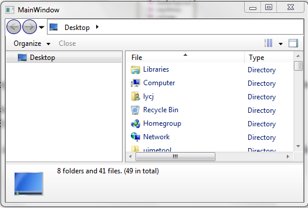
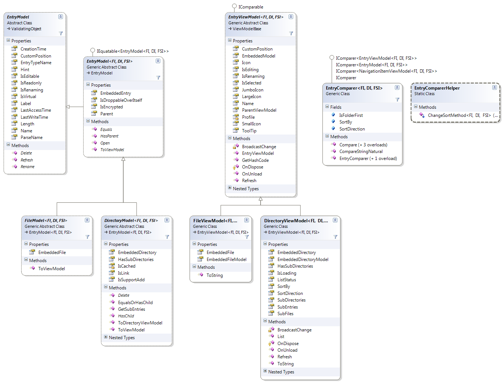
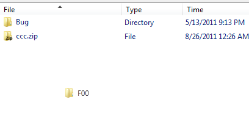
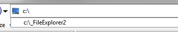
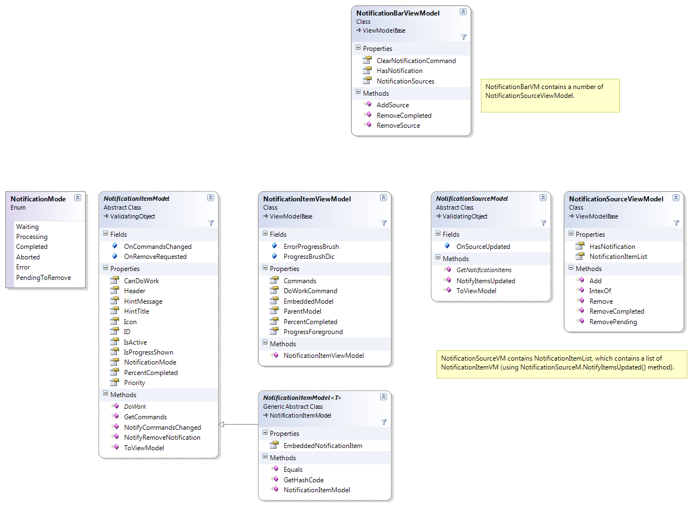
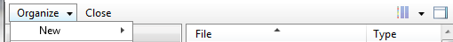
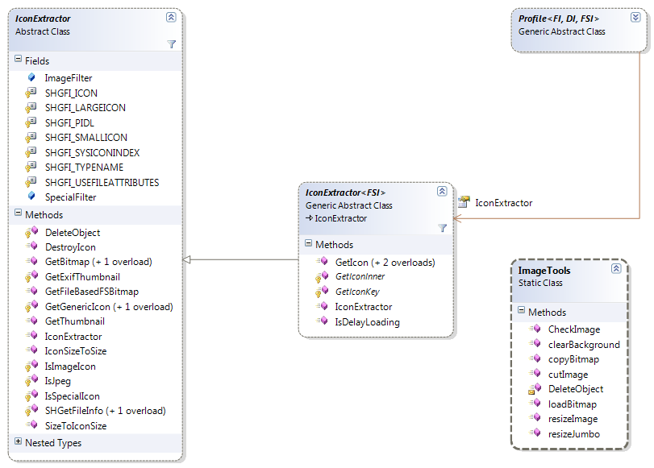

<!DOCTYPE html PUBLIC "-//W3C//DTD HTML 4.01 Transitional//EN">
<html>
  <head>
    <meta content="text/html; charset=ISO-8859-1"
      http-equiv="Content-Type">
    <title>FileExplorer2</title>
  </head>
  <body>
    <h2>Introduction</h2>
    <p>FileExplorer is a WPF control that allow user to browse
      filesystem contents.&nbsp; FileExplorer1 (ver1) consist of a
      directory tree and file list, although it's ver1 it supports shell
      directory, context menu, drag and drop, multi-select in file
      list.&nbsp; <br>
    </p>
    <p>However, in ver1, the base currency is defined as
      System.IO.FileSystemInfoEx (Ex), that means the control
      communicate using a DirectoryInfoEx.&nbsp; As I maintained both Ex
      and COFE(ExA), I had to maintain two copies of the source code,
      which create additional workloads and inconsistancy.&nbsp; The
      original design also disallow the implementation of other File
      System entities. &nbsp; <br>
    </p>
    <p>As Windows 8 metro application will disallow Win32, and will
      require to use Windows Runtime (WinRT) to access the file system,
      a new FileExplorer has to be coded to work with Metro or other
      kind of file systems.<br>
    </p>
    <p>ver2 is a rewrite of the controls using the same
      Model-View-ViewModel (MVVM) pattern, and solved some of the issues
      in ver1.<br>
    </p>
    <h2>Index</h2>
    <ul>
      <li>The Demo<br>
      </li>
      <li>Whats new?</li>
      <ul>
        <li>Extra Controls</li>
        <li>Generic EntryModels<br>
        </li>
        <li>One Large ViewModel</li>
        <li>Asynchronous loading and lookup</li>
        <ul>
          <li>Bounty system<br>
          </li>
        </ul>
      </ul>
      <li>How to use?</li>
      <ul>
        <li>EntryModel&lt;FI,DI,FSI&gt;</li>
        <li>Profile</li>
        <ul>
          <li>Drag and Drop</li>
          <li>Search</li>
          <li>Status bar</li>
          <li>Notification bar</li>
          <li>Icon extractor</li>
        </ul>
      </ul>
      <li>Conclusion<br>
      </li>
    </ul>
    <br>
    <h2>The Demo</h2>
    <br>
    <br>
    The demo is a WPF window with only one control named Explorer2.<br>
    <br>
    To use the control you have to include the files in
    Explorer2TestProj\Ex directory, and reference the following
    libraries<br>
    <ul>
      <li>Cinch.WPF<br>
      </li>
      <li>QuickZip.UserControl <br>
      </li>
      <li>QuickZip.UserControl.Explorer and<br>
      </li>
      <li>QuickZip.IO.PIDL</li>
    </ul>
    <p>Then you can use the control in xaml:<br>
    </p>
    <pre>&lt;uc:Explorer2 x:Name="explr" Style="{DynamicResource qz_Explorer_Style}"   &nbsp;&nbsp;&nbsp;&nbsp;&nbsp;&nbsp;&nbsp;&nbsp;&nbsp;&nbsp;&nbsp;&nbsp;&nbsp;&nbsp;&nbsp;&nbsp;&nbsp;
    Background="{Binding Background, ElementName=mainWindow}" /&gt;&nbsp;&nbsp;&nbsp;&nbsp;&nbsp;&nbsp;     
</pre>
    and set the code-behind view model :<br>
    <pre>explr.DataContext = new ExExplorerViewModel(new ExProfile());</pre>
    <br>
    Noticed that unlike ver1, there is only a full Explorer component
    (no DirectoryTree or FileList component) provided, if you want an
    individual control, just create your own style based on&nbsp;
    "qz_Explorer_Style" in \Themes\Explorer.xaml, and remove the
    unwanted controls.<br>
    <br>
    <h2>Whats new?<br>
    </h2>
    <h3>Extra Controls</h3>
    In addition to Directory tree and File list, FileExplorer2 (v2)
    include Breadcrumb, Statatusbar and Notification bar.<br>
    All data and control templates of the control and now reside under
    Themes directory.<br>
    <h3>Generic EntryModels</h3>
    ver1 was tightly coupled with FileSystemInfoEx, which makes it hard
    to work with othert type of entity. <br>
    <br>
    Another issue is that, because the currency is a Directory
    (DirectoryInfoEx) instead of a Model (DirectoryModel), it's common
    that for a single request (browsing a directory), the directory may
    loads multiple times by the DirectoryTree and FileList.<br>
    <br>
    The dependency of the FileExplorer and the entity (FileSystemInfoEx)
    is removed.&nbsp;&nbsp; User now define their own
    DirectoryModel/FileModel, which inherited from EntryModel.&nbsp; The
    model is defined as Generic, e.g. EntryModel&lt;FI,DI,FSI&gt;.&nbsp;
    <br>
    <h3>One Large ViewModel</h3>
    <a href="Explorer.ViewModel.png"></a><br>
    <br>
    In&nbsp; v1, each control (DirectoryTree and FileList) are
    implemented as a stand-alone control, and the currency
    (CurrentDirectory), which is a DirectoryInfoEx, and is bound among
    controls using dependency property.&nbsp; this make the development
    simple.&nbsp; <br>
    <br>
    However it's getting hard to control when there's more controls
    (e.g. breadcrumb, navigator) bind each other using
    BindingMode.TwoWay, so it became unrealiable if more than one
    control try to change the current directory.<br>
    <br>
    The another change is that the multiple control approach is replaced
    by one large view model (see the diagram above), <a
      href="Explorer.ViewModel.png">ExplorerViewModel</a> now consists
    of the following view models: <br>
    <ul>
      <li><a href="Explorer.ViewModel.Misc.png">SearchViewModel</a> (for
        Breadcrumb text input) </li>
      <li><a href="Explorer.Model.Notification.png">NotificationBarViewModel</a>
        <br>
      </li>
      <li><a href="Explorer.ViewModel.Viewer.png">CurrentEntryBrowser/BrowserViewModel</a>
        (Toolbar / Statusbar and "File list")<br>
      </li>
      <li><a href="Explorer.ViewModel.Navigation.png">BreadcrumbViewModel</a>
        <br>
      </li>
      <li><a href="Explorer.ViewModel.Navigation.png">NavigationRootViewModel</a>
        (Directory tree)<br>
      </li>
    </ul>
    <h3>Asynchronous loading and lookup</h3>
    v1 introduce asynchronous loading by using the
    AsyncObservableCollection, which load the entries (in a linq
    statement) in background thread, and notify UI thread to add or
    remove an item in UI thread.&nbsp; This is required because UI
    thread shouldn't be blocked by a slow operation, and the UI code
    fails if an UI object is changed by a non-UI thread.<br>
    <br>
    v2 uses the same loading mechanism too, but they use a different
    mechanism to find and select an entry.<br>
    <br>
    To lookup an entry, v1 create a new thread (backgroundworker) to
    load the appropriate entries down the hierarchy tree, till it found
    the requested entry.<br>
    <br>
    <pre>(DirTreeViewModel.LookupChild() method)
public override TreeViewItemViewModel LookupChild(IFileSystemInfoExA node, Func<bool> cancelCheck)
{
    ...
    foreach (TreeViewItemViewModel subModel in tvm)
    {
        if (subModel.Equals(node))
            return subModel;
        else
            if (subModel is DirTreeViewModel)
            {
                DirTreeViewModel subDirModel = subModel as DirTreeViewModel;

                IDirectoryInfoExA subDir = subDirModel.EmbeddedDirModel.EmbeddedDirEntry;
                if (node.Equals(subDir))
                    return subDirModel;
                else if (subDirModel.CanLookUp &amp;&amp; COFETools.HasParent(node, subDir))
                    return subDirModel.LookupChild(node, cancelCheck);
            }
	...
}
</bool></pre>
    The problem is that:<br>
    <ol>
      <li>Because the lookup is done synchronously, only one lookup can
        be run at a time, and the directory tree may look freezing while
        lookuping.<br>
      </li>
      <li>Only one level of hierarchy can be processed at a time, so if
        a directory contains 2048 sub-directories, it will continues to
        load the next 2047 sub-directories even if the requested entry
        is under the first sub-directory, before continue the lookup in
        the first sub-directory.</li>
    </ol>
    <h4>Bounty system</h4>
    v2 solved the problem by reversing the process, the root model now
    contains a property named Bounty, which represents the entry
    requested to be selected, a PlaceBounty() method is available to set
    this property:<br>
    <pre>public virtual void PlaceBounty(EntryModel<fi, di,="" fsi=""> bountyModel)
{
    if (bountyModel is DirectoryModel<fi, di,="" fsi="">)
    {

        if (SelectedNavViewModel != null &amp;&amp;
            SelectedNavViewModel.EmbeddedDirModel.EmbeddedDir.Equals(bountyModel))
        {
            //False alarm, already Selected
            SelectedNavViewModel.IsSelected = true;
            return;
        }
        else
            if (SelectedNavViewModel != null &amp;&amp;
            SelectedNavViewModel.EmbeddedDirModel.HasChild(bountyModel.EmbeddedEntry))
            {
                //Fast mode, item is subentry of current selected
                Bounty = (DirectoryModel<fi, di,="" fsi="">)bountyModel;
                SelectedNavViewModel.IsSelected = false;
                SelectedNavViewModel.PlaceBounty();

            }
            else
            {
                //Slow mode, iterate from root
                if (SelectedNavViewModel != null)
                    SelectedNavViewModel.IsSelected = false;

                Bounty = (DirectoryModel<fi, di,="" fsi="">)bountyModel;

                foreach (NavigationItemViewModel<fi, di,="" fsi=""> subDir in
                    _subDirectories.OrderBy((nivm) =&gt; { return -nivm.EmbeddedEntryModel.CustomPosition; }))
                    if (subDir.EmbeddedDirModel.EqualsOrHasChild(bountyModel))
                    {
                        subDir.PlaceBounty();
                        break;
                    }
                    else subDir.CollapseAll();
            }
    }
}<br></fi,></fi,></fi,></fi,></fi,></pre>
    The subdir's PlaceBouny() method notify them a new bounty is
    available, so they will perform a lookup:<br>
    <pre>public void PlaceBounty()
{
    if (_rootModel == null || _rootModel.Bounty == null || !IsDirectory || _isSeparator)
        return;

    if (EmbeddedDirModel.EqualsOrHasChild(_rootModel.Bounty))
    {
        if (EmbeddedDirModel.Equals(_rootModel.Bounty))
        {
            //Exchange bounty if cached.
            if (!EmbeddedDirModel.IsCached &amp;&amp; _rootModel.Bounty.IsCached)
                _embeddedDirModel = _rootModel.Bounty;
            _rootModel.RequestBountyReward(this);
        }
        else
        {
            IsSelected = false;
            if (_isInited)
            {
                IsExpanded = true;
                foreach (NavigationItemViewModel<fi, di,="" fsi=""> subDirVM in
                    _subDirectories.OrderBy((nivm) 
                     =&gt; { return -nivm.EmbeddedEntryModel.CustomPosition; }))
                if (subDirVM.EmbeddedDirModel.EqualsOrHasChild(_rootModel.Bounty))
                    {
                        subDirVM.PlaceBounty(); //Tell sub-directory bounty is up.
                        break;
                    }
                    else subDirVM.CollapseAll(); //NOYB, collapse!
            }
            else
            {
                //Let greed does all the work....
                IsExpanded = true;
            }
        }
    }
    else IsSelected = false;
}</fi,></pre>
    <br>
    Notice that, instead of loading the subentries, it change the
    IsExpanded property (in background thread, which is bound to the
    UI), which will trigger the subdirectory in UI to be expanded.&nbsp;
    UI thread(not the background thread) will then load sub-folders, and
    continue looking up for bounty.<br>
    <br>
    When an entry figured out that it's the bounty, it calls RootModel's
    RequestBountyReward(this) method to notify the requested entry is
    found, so RootModel can clear the Bounty.<br>
    <br>
    So instead of using a thread to perform a lookup from top to bottom
    of hierarchy, expanding them manually,&nbsp; v2 allows each level of
    child item to use their IsExpanded property to locate the entry, and
    thread issue is avoided.<br>
    <br>
    <br>
    <br>
    <br>
    <h2>How to use?</h2>
    This version uses EntryVM as its base currency, which remove the
    dependency to Ex, but because of the another layer, user is
    responsible to write their own <span style="font-weight: bold;">EntryModels(EntryM)</span>,
    <span style="font-weight: bold;">Profile </span>and <span
      style="font-weight: bold;"> IconExtractor</span>. This has been
    implemented in the demo if you are going to use Ex only.
    <h3>EntryModel&lt;FI,DI,FSI&gt; <br>
    </h3>
    <a href="Explorer.Model.Entry.png"></a><br>
    <br>
    EntryM is a Model which represents a File or Directory entity, it
    contains a property named EmbeddedEntry which returns the actual
    entry.<br>
    <br>
    Most Models and ViewModels in FileExplorer2 are generic classes, for
    examples, EntryModel : <br>
    <pre>public class EntryModel&lt;FI, DI, FSI&gt; { ... }</pre>
    where FI means FileInfo (non-container) , DI means DirectoryInfo
    (container) and FSI means FileSystemInfo (common ancestor for
    FI/DI).<br>
    <br>
    As a user of FileExplorer, you shall extends the FileModel(FileM)
    and DirectoryModel(DirM), which is inherits from EntryM.<br>
    <br>
    In the case of PIDL, it's FileInfoEx, DirectoryInfoEx and
    FileSystemInfoEx.<br>
    <pre>public class ExFileModel: FileModel&lt;FileInfoEx,DirectoryInfoEx,FileSystemInfoEx&gt; { .... }
public class ExDirectoryModel: DirectoryModel&lt;FileInfoEx,DirectoryInfoEx,FileSystemInfoEx&gt; { .... }</pre>
    In the case of COFE, it's IFileInfo, IDirectoryInfo and
    IFileSystemInfo.<br>
    <pre>public class ExAFileModel: FileModel&lt;IFileInfo,IDirectoryInfo,IFileSystemInfo&gt; { .... }
public class ExADirectoryModel: DirectoryModel&lt;IFileInfo,IDirectoryInfo,IFileSystemInfo&gt; { .... }</pre>
    <br>
    EntryModel contains a number of methods to be overrided, e.g.:<br>
    <ul>
      <li>Refresh() method - update the properties (e.g. Label)</li>
      <li>Open(), Delete() method - define action when user open (by
        d-click) / delete the item<br>
      </li>
      <li>HasChild(), HasParent() method - whether has the specified
        entry as child or parent.<br>
      </li>
      <li>getSubEntries() method - return the child entries (FSI) of the
        current directory model.<br>
      </li>
      <li>getParent() method - return the entry (DI) of the current
        model.<br>
      </li>
    </ul>
    <br>
    EntryVM is a ViewModel which add functionalities to EntryM.&nbsp;
    One examples is DirVM.SubEntries, SubFiles and SubDirectories, which
    list it's sub-contents asynchronously.<br>
    User do not have to extends EntryVM, EntryM has a ToViewModel()
    method to convert itself to a EntryVM.&nbsp; <br>
    <br>
    <br>
    <h3>Profile</h3>
    <a href="Explorer.Model.Profile.png"></a><br>
    <br>
    While EntryModel represents an entity, Profile act as a utility
    class for your implementation, you have to override the following
    methods:<br>
    <ul>
      <li>ConstructDirectoryModel/FileModel/Entry/GetDiskPath() methods
        - EntityM construction/conversion methods.</li>
      <li>Lookup(), GetMetadata(), GetNotificationSources() and
        GetCommands() methods - Used by Search, Statusbar,
        NotificationBar and Toolbar to return correct items, more
        explaination below.<br>
      </li>
      <li>ShowContextMenu(), ShowProperties() methods - Show shell (or
        your custom) context menu or properties dialog.<br>
      </li>
      <li>GetSupportedAddAction(), Copy(), Link(), CreateDirectory()
        methods - Directory contents manipulation methods.</li>
    </ul>
    <p><br>
    </p>
    <h4>Drag and Drop</h4>
    <p><br>
    </p>
    <p>NavigationRootVM (Directory tree root), NavigationItemVM
      (Drectory tree item) and DndDirectoryViewerVM (File list)
      implements ISupportDrag&lt;EntryM&gt; and
      ISupportDrop&lt;EntryM&gt;, which contain drag and drop related
      methods, like SelectedItems (items being dragged),
      CurrentDropTarget (to know the destination)&nbsp; and Drop()
      method (initialize the Dnd). <br>
    </p>
    <p>A DragDropHelper is a static class, once registered, will look
      for the interfaces (ISupportDrag and ISupportDrop) in the View
      Models (from the control's DataContext), and uses the methods to
      facilitate Drag and Drop.&nbsp; <br>
    </p>
    <p>FileDragDropHelper is used to handle File based Drag and Drop,
      which uses the FileDrop from the incoming DataObject.&nbsp; To
      improve performance, FileDragDropHelper also store the dragging
      item in a private property named _dataObj, so inter-application
      drag and drop is done based on that local variable.&nbsp;
      (_dataObj is a VirtualDataObject, it delay the construction of the
      files till they are dropped).&nbsp; <br>
    </p>
    <p>To use FileDragDropHelper, one has to call the
      ExplorerVM.RegisterDragAndDrop() method, and override the
      Profile.GetSupportedAddAction() method, which&nbsp; is used to
      determine if the source (array of FI) and be added to the target
      (a DI), you can return an AddActions enum (All, Move, Copy, Link,
      None).&nbsp; <br>
    </p>
    <p>If the AddActions is not None, DragDropHelper, will call
      Profile.Put() method, which calls Profile.Copy() and Link()
      method.</p>
    <h4>Search</h4>
    
    <p>The input section of Navigation bar display suggestion based on
      input, to enable this feature it uses the Profile.Lookup() method:<br>
    </p>
    <p>The following examples return the typed path concated with
      "_FileExplorer2".<br>
    </p>
    <pre>public override IEnumerable&lt;Suggestion&gt; Lookup(string lookupText)
{
&nbsp;&nbsp;&nbsp; yield return new Suggestion(lookupText + "_FileExplorer2");
}</pre>
    <p>You can implement your own search mechanism here (e.g. Windows
      Search).<br>
    </p>
    <h4>Status bar<br>
    </h4>
    <h4><a href="Explorer.Model.Metadata.png"></a></h4>
    <p>Notification bar uses profile.GetMetadata() method to obtain
      metadata of one or multiple EntryModels.&nbsp; GetMetadata()
      return a IEnumerable of GenericMetadataM.&nbsp;
      GenericMetadataMlet you specify a type, different type will be
      displayed differently:<br>
    </p>
    <table style=" text-align: left;" border="1" cellpadding="2"
      cellspacing="2">
      <tbody>
        <tr>
          <td style="vertical-align: top;"><span style="font-weight:
              bold;">Type</span><br>
          </td>
          <td style="vertical-align: top;"><span style="font-weight:
              bold;">Display as</span><br>
          </td>
        </tr>
        <tr>
          <td style="vertical-align: top;">int,uint,long,ulong,float,double<br>
          </td>
          <td style="vertical-align: top;">String<br>
          </td>
        </tr>
        <tr>
          <td style=" vertical-align: top;">short<br>
          </td>
          <td style="vertical-align: top;">Percentage bar<br>
          </td>
        </tr>
        <tr>
          <td style="vertical-align: top;">DateTime<br>
          </td>
          <td style="vertical-align: top;">Format as DateTime String<br>
          </td>
        </tr>
        <tr>
          <td style="vertical-align: top;">string<br>
          </td>
          <td style="vertical-align: top;">String<br>
          </td>
        </tr>
        <tr>
          <td style="vertical-align: top;">string[]<br>
          </td>
          <td style="vertical-align: top;">Comma separated string<br>
          </td>
        </tr>
      </tbody>
    </table>
    <p>The type is identified by MetadataVM (which is constructed by
      using the ToViewModel() method), using the
      IsDateTime/Number/Percent/String/StringArray properties.&nbsp;
      Then this property is accessed by Statusbar's DataTemplate
      (Statusbar.xaml) to determine what to show.</p>
    <p></p>
    <p>EntryMetadaM is inherited from GenericMetadataM, which specify
      that the metadata is related to one or more EntryMs, the following
      code construct the statusbar item shown above.<br>
    </p>
    <pre>//Without the 4th parameter, so no header, and occupy whole line.<br>yield return new EntryMetadataModel&lt;String, FileInfoEx, DirectoryInfoEx, FileSystemInfoEx&gt;(<br>      appliedModels,"ddddd (1).txt", "Key_Label");  <br><br>//With the 4th parameter<br>yield return new EntryMetadataModel&lt;String, FileInfoEx, DirectoryInfoEx, FileSystemInfoEx&gt;(<br>      appliedModels,UITools.SizeInK((ulong)model.Length), "Key_Size", "Selected size");<br><br>//If the generic type is short, display as percentage progress bar.<br>yield return new EntryMetadataModel&lt;short, FileInfoEx, DirectoryInfoEx, FileSystemInfoEx&gt;(<br>      appliedModels, 13, "Key_Percent", "13 Percent");<br><br>//If the generic type is DateTime, display as datetime.<br>yield return new EntryMetadataModel&lt;DateTime, FileInfoEx, DirectoryInfoEx, FileSystemInfoEx&gt;(<br>      appliedModels, DateTime.Now, "Key_Now", "Now");<br><br></pre>
    <h4>Notification bar<br>
    </h4>
    <p><a href="Explorer.Model.Notification.png"></a><br>
    </p>
    <p>Notification bar display NotificationItemVM at the top of the
      Statusbar, these NotificationItemVM are generated by
      NotificationSourceVM.&nbsp; NotificationItemVM have a list of
      properties for customization:<br>
    </p>
    <table style=" text-align: left;" border="1" cellpadding="2"
      cellspacing="2">
      <tbody>
        <tr>
          <td style="vertical-align: top;">CanDoWork<br>
          </td>
          <td style="vertical-align: top;">If true, double click the
            NotificationItem will execute DoWork() method.<br>
          </td>
        </tr>
        <tr>
          <td style="vertical-align: top;">IsProgressShown<br>
          </td>
          <td style="vertical-align: top;">Circular progress bar on the
            left side of a NotificationItem, use PercentCompleted to set
            it's progress.<br>
          </td>
        </tr>
        <tr>
          <td style="vertical-align: top;">Icon<br>
          </td>
          <td style="vertical-align: top;">Bitmap of the item.<br>
          </td>
        </tr>
        <tr>
          <td style="vertical-align: top;">Header<br>
          </td>
          <td style="vertical-align: top;">Header text.<br>
          </td>
        </tr>
        <tr>
          <td style="vertical-align: top;">HintMessage / HintTitle<br>
          </td>
          <td style="vertical-align: top;">Shown when mouse over the
            NotificationItem.<br>
          </td>
        </tr>
        <tr>
          <td style="vertical-align: top;">Priority<br>
          </td>
          <td style="vertical-align: top;">Determine the position of an
            item.<br>
          </td>
        </tr>
        <tr>
          <td style="vertical-align: top;">GetCommands() method.<br>
          </td>
          <td style="vertical-align: top;">Return a list of commands (in
            CommandModel), which shown in dropdown menu.<br>
          </td>
        </tr>
      </tbody>
    </table>
    <p>One can define a NotificationSourceM, which implements
      GetNotificationItems() and NotifyItemUpdate() methods.&nbsp;&nbsp;
      These NotificationSourceM can be returned in the
      Profile.GetNotificationSources() method.<br>
    </p>
    <pre>public override IEnumerable&lt;NotificationSourceModel&gt; GetNotificationSources()<br>{<br>&nbsp;&nbsp;&nbsp; yield return ExWorkNotificationSourceModel.Instance;
}</pre>
    <h4>Tool bar</h4>
    <p><a href="Explorer.Model.Command.png"></a><br>
    </p>
    <p><br>
      Each button (include the dropdown) on the toolbars are actually a
      CommandModel in the code. When selection changes, toolbar calls
      the Profile.GetCommands() method.&nbsp; <br>
    </p>
    <p>CommandModel is an abstract class, there are a number of usable
      derived class (see the diagram), the model that derived from
      DirectoryCommandModel have IsDirectory set to true, which will
      shown on the toolbar as a dropdown (or sub-menu if it's already in
      a dropdown).<br>
    </p>
    <p>The following sample inserted a close button in the main menu:</p>
    <p><br>
    </p>
    <p>public override IEnumerable&lt;CommandModel&gt;
      GetCommands(EntryModel&lt;FileInfoEx, DirectoryInfoEx,
      FileSystemInfoEx&gt;[] appliedModels)<br>
      {<br>
      &nbsp;&nbsp;&nbsp; yield return new
      GenericCommandModel(ApplicationCommands.Close);<br>
      }<br>
    </p>
    <p>Noted that organize, toggle preview and viewmode dropdown is
      predefine as default, if you want to remove them you will have to
      modify DirectoryViewerVM.getActionModel() and remove them
      manually.<br>
    </p>
    <p> </p>
    <h3>IconExtractor</h3>
    <a href="Explorer.IconExtractor.png"></a><br>
    <br>
    Profile.IconExtractor property return an IconExtractor which
    responsible to return icon for one entity, retrieve an icon is a two
    step process, <br>
    <ol>
      <li>It calls IconExtractor.GetIconKey(), which return a string
        representation for the icon</li>
      <li>Then it calls IconExtractor.GetIcon() with the key, and
        retrieved the icon.<br>
      </li>
    </ol>
    Because constructing an icon (using GetIcon(), which usually leads
    to WinAPI) method is slower than load from cache, entity with same
    IconKey can share the same icon resource.<br>
    <br>
    <h2>Conclusion</h2>
    v2 does decoupled the dependency of FileSystemInfoEx and improve the
    lookup and overall response speed, <br>
    <br>
    As you see, there still a number off issues:<br>
    <ol>
      <li>Profile class is overly complicated, it should be splitted
        into multiple interface when it's refactored.</li>
      <li>IconExtractor still rely on Win32, FileExplorer should ask
        profile for icon instead of having it's own implementation.<br>
      </li>
    </ol>
    <br>
    <br>
    <br>
  </body>
</html>
